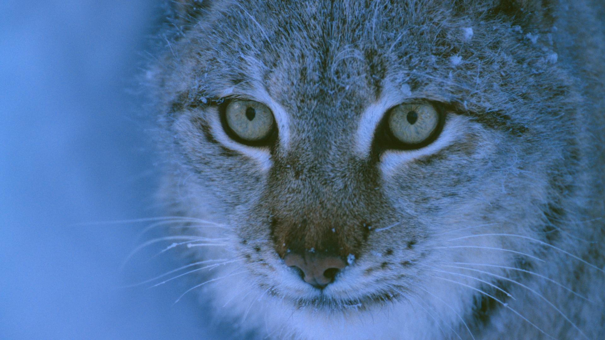
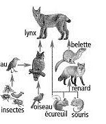
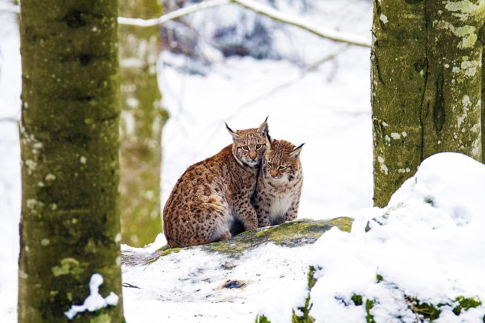
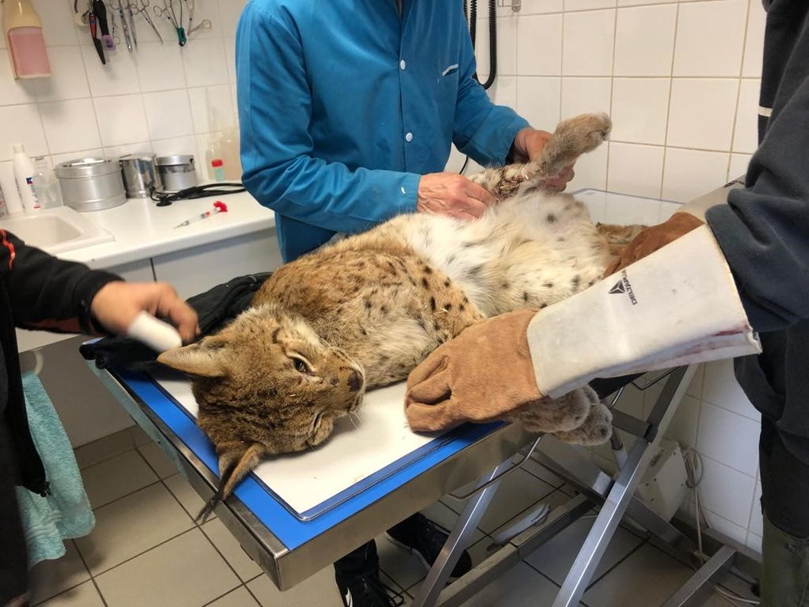
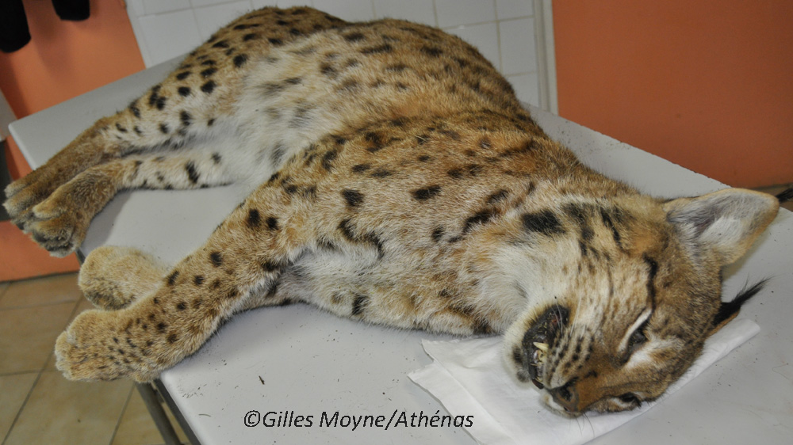

Le lynx boréal est un prédateur solitaire, actif du crépuscule au lever du soleil.
Le territoire du mâle recouvre celui d'une ou plusieurs femelles.
Le lynx mâle est intolérant envers les autres mâles traversant son territoire,
mais ce sont les femelles qui restent les plus rancunières entre elles.
Les territoires comportent cependant des « zones neutres » où il est possible de circuler sans qu’il y ait affrontement : il s'agit fréquemment des limites du territoire.
Chaque adulte a un territoire de 20 à 400 km2, selon l'abondance des proies.
Il vit dans des milieux forestiers de plaine et de montagne d'Europe.
Les seuls potentiels prédateurs du lynx boréal sont l’ours brun et le loup gris (en dehors de l’Homme).
L'espérance de vie du linx boréal est d'environ 15ans a l'état sauvage.

Le lynx boréal chasse principalement les ongulés de taille moyenne (chevreuil, chamois, mouton, …) ainsi que divers mammifères assez petits (lièvres, marmottes, lapins, rats et autres rongeurs). Il mange également certains oiseaux et prédateurs plus petits (renard roux), ainsi que des plus gros herbivores (orignal, renne, cerf, …). Généralement, le lynx traque sa proie, la suit et la tue d’une morsure. Il peut aussi chasser en embuscade, se rapprochant de sa cible et la tuant par surprise. Son talent de chasseur est dû à son ouïe et sa vue sur-développées.

La saison de reproduction du lynx a lieu entre février et avril. Les observations menées sur le Lynx boréal montrent que selon les années, seules 43 à 64 % des femelles donnent naissance à des jeunes. Le temps de gestation est de 63 à 68 jours, les portées sont composées de un à quatre jeunes. Elles donnent naissances aux petits dans un repaire isolé comme une crevasse ou une tanière, que la femelle tapisse de poils, de plumes et de feuilles.

| année | population | lieux |
|---|---|---|
| 1970 | réaparition du lynx | France |
| 1980-1990 | 9 femelles et 12 mâles réimplantés | Vosges |
| 2024 | environ 2000 | Dans les pays scandinaves, les pays baltes et les Carpates |
| 2024 | entre 10 et 200 | Europe de l'Ouest, Europe de l’Est et Asie centrale |

